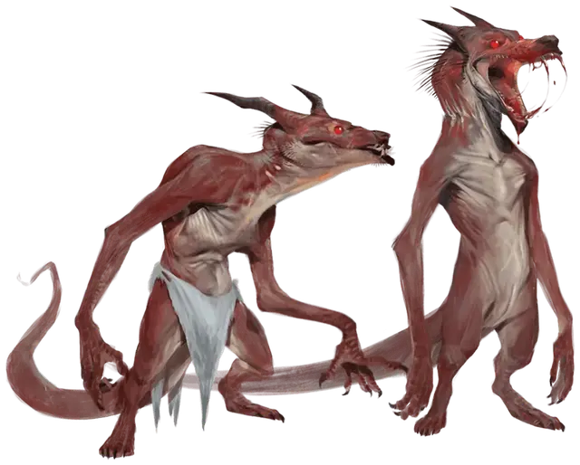

Кобольд-порождение вампира
Kobold Vampire Spawn
Маленькая Нежить, нейтрально-злая

Класс Доспеха 14
Хиты 39 (6к6 + 18)
Скорость 30 футов, лазая 20 футов
| мод | спас | ||
|---|---|---|---|
| СИЛ | 10 | +0 | +0 |
| ЛОВ | 18 | +4 | +6 |
| ТЕЛ | 16 | +3 | +3 |
| мод | спас | ||
|---|---|---|---|
| ИНТ | 8 | −1 | −1 |
| МДР | 8 | −1 | +1 |
| ХАР | 8 | −1 | −1 |
Навыки Восприятие +1, Скрытность +6
Сопротивление урону некротическая энергия; дробящий, колющий, рубящий от немагических атак
Чувства тёмное зрение 60 футов, пассивное Восприятие 11
Языки Общий, Драконий
Опасность 3 (700 опыта)
Бонус мастерства +2
Особенности
Тактика стаи. Вампир совершает с преимуществом броски атаки по существу, если в пределах 5 футов от этого существа находится как минимум один дееспособный союзник вампира
Регенерация. Вампир восстанавливает 10 хитов в начале своего хода, если у него есть хотя бы 1 хит, и он не находится ни под солнечными лучами, ни в текущей воде. Если вампир получает урон излучением или урон от святой воды, эта особенность не действует в начале следующего хода вампира.
Слабости вампира. Вампир обладает следующими слабостями:
• Запрет. Вампир не может войти в жилище без приглашения одного из обитателей.
• Урон от текущей воды. Вампир получает урон кислотой 20, если оканчивает ход в текущей воде.
• Кол в сердце. Если колющее оружие, изготовленное из дерева, вонзить в сердце вампира, пока он недееспособен в своем месте отдыха, вампир станет парализованным, пока кол не вынут.
• Гиперчувствительность к солнечному свету. Вампир получает урон излучением 20, если начинает ход под солнечным светом. Находясь на солнечном свету, он совершает с помехой броски атаки и проверки характеристик.
Необычная природа. Вампир не нуждается в воздухе.
Действия
Укус. Рукопашная атака оружием: +6 к попаданию, досягаемость 5 футов, одно существо. Попадание: 6 (1к4 + 4) колющего урона плюс 5 (2к4) урона некротической энергией. Максимум хитов цели уменьшается на количество, равное полученному урону некротической энергией, а вампир восстанавливает такое же количество хитов. Уменьшение хитов длится до тех пор, пока цель не окончит продолжительный отдых. Цель умирает, если этот эффект уменьшает максимум её хитов до 0.
Описание
У гнолла-вампира Текали-ли есть небольшое количество подручных порождений, составляющие ему компанию в Пещерах Голода (см. главу 6). Кобольды-порождения вампира до ужаса боятся гнолла-вампира и не понимают его команд, поэтому стараются обходить Текали-ли стороной. Эти ненасытные кобольды жаждут крови и стараются нападать группой на одного.